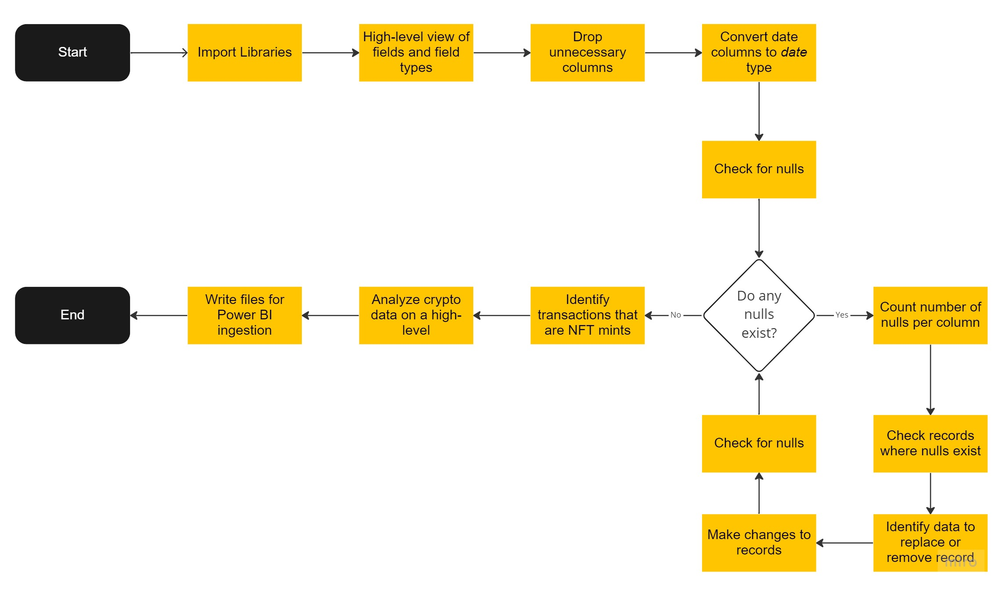
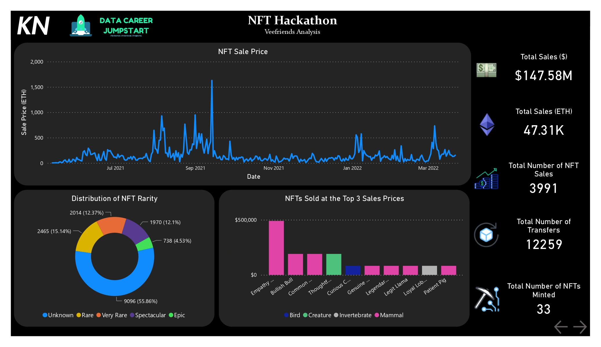
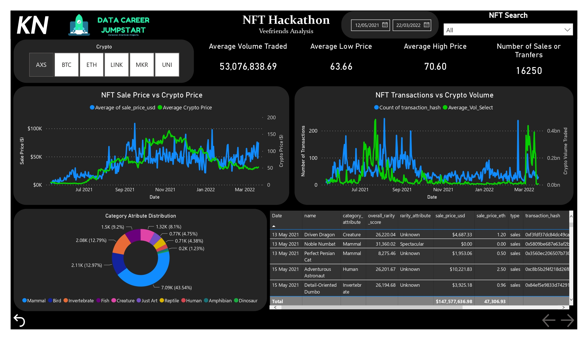

DCJ: NFT Hackathon
Analysing the Veefriends Data Set
Last Updated: 19/10/2022
1. Introduction
Initially created and formulated by Avery Smith, creator of Data Career Jumpstart (DCJ), this NFT Hackathon is the second hackathon done by DCJ and is focused around NFTs. Before diving into the hackathon itself, a basic understanding is required.
1.1. What is an NFT?
An NFT, or Non-Fungible Token, is a cryptographic asset based on blockchain technology. The premise of an NFT is that it cannot be replaced due to unique properties, hence non-fungible. Fungibility is defined as a property of goods whose units are interchangeable, i.e. if one unit of the good always carries the exact same value as all other units of the good. Fungibility is typically a desired property for many goods, but is an essential property for money. Bitcoin and other cryptocurrencies are fungible by the definition, therefore an NFT being non-fungible means it cannot be replaced nor interchanged due to its unique properties.
Although in the more recent months, at the time of writing this, the craze around NFTs have decreased significantly, with notable NFTs bought by various celebrities no longer holding the value they once did. Nevertheless, the technology that it is built on as well as the concept of fungible and non-fungible tokens and currencies is something that will be seen more in the future as web 3.0 advances as does technology.
2. Use Case & Data
The chosen use case for this hackathon is around analytics. How can I extract insights from the data through various methods? The chosen data used in this hackathon is the Veefriends dataset. This dataset is Gary Vaynerchuk project on his NFT collection on OpenSea. The data details various attributes of the NFT, its rarity, and transaction details. OpenSea is the world's first and largest digital marketplace for crypto collectables and NFTs.
3. Tools & Skills
3.1. Tools
- Python
- Jupyter Notebook
- Power BI
- DAX
3.2. Skills
- Data Analysis
- Data Visualisation
- Programming
- Trend Analysis
4. Method
The idea behind approaching this hackathon and use case was to use Python for everything relating to understanding the data, cleaning it, analysing it, etc. Power BI was going to be used solely for visualisation purposes with minor measures being calculated for the visuals.
4.1. Python Notebook
Python was used mainly to clean the data, do a brief analysis, and write the processed data to files so that it can be ingested into Power BI. The flow diagram below give a high-level view of what was done in Python. Alternatively you can take a look at the Python Notebook over here.
4.2. Power BI
First thing I generally do in any Power BI implementation is try to normalise data and create dedicated tables such as date tables, ranking tables, etc. That being said, first created table is a Date table:
Date = CALENDAR(FIRSTDATE(AXS[Date]), LASTDATE(AXS[Date]))
And further adding a column for the year, month and day. Another table created is the Ranking table. The ranking table was created manually ranking the rarities of the NFTs from 1 to 5, going in order of Unknown, Rare, Very Rare, Epic, Spectacular respectively. Another table entered and created table is the Editions table. Similar to the ranking table of rarity, the Editions table ranks the edition attribute from 1 to 6 ranging in increasing edition rarity.
For each crypto there are four measures created, the reason for this is to create a dynamic measure and value that will calculate the average low, high, volume, and price of the crypto. This is then used in a CASE SWITCH statement in a created Measures table.
Average Crypto Price =
SWITCH(
SELECTEDVALUE('Measures Table'[Measure]),
"AXS",[Avg_AXS_Price],
"BTC", [Avg_BTC_Price],
"ETH", [Avg_ETH_Price],
"LINK",[Avg_LINK_Price],
"MKR",[Avg_MKR_Price],
"UNI", [Avg_UNI_Price])
5. Final Dashboard
The final dashboard is a two-pager. An introductory/summary page and something that allows for the analysis and a bit deeper. The first page of the dashboard breaks down the key facts and figures. Essentially you a timeline of sales price in Ethereum of NFTs with the distribution of the rarities of all the NFTs and also presents the all NFTs that sold for 3 highest values. On the right hand side, summarised figures detailing total sales in dollars and Ethereum; total number of sales, total number of transfers, and something I calculated which is the total number of NFTs minted.
The second page of the dashboard gives the user more depth and control. Two static filters exist on the top, one to give a date range, and the other to select multiple NFTs or search for it. A single dynamic filter allows the user to select either the AXS, BTC, ETH, LINK, MKR, or UNI cryptos to be able to update the respective average volume, average high and low price values as well as the graphs comparing the average price of the crypto in the day against the average sale price of the NFTs on that day as well as the number of transactions of NFTs in the day against the average volume of crypto traded. The reason those 6 cryptos are chosen is discussed in the analysis below. Another distribution graph shows how NFTs are distributed by their category attribute and lastly a detailed table for the user to view the date, NFT sold or transferred and the unique transaction hash among other details. The screenshots below show what the dashboard looks like or alternatively you can download it and play with it from here.

6. Analysis
The six random cryptos: Axie Infinity (AXS), Bitcoin (BTC), Ethereum (ETH), Chainlink (LINK), MakerDao (MKR), and Uniswap (UNI). Other than BTC, the rest are all cryptos based on Ethereum 1. The reason that coins based on ETH is used is because OpenSea is built on ETH blockchain and sales are in ETH. The idea of introducing other cryptos based on ETH as well as BTC is to see if there is a correlation between the price of a crypto and the price of an NFT sold. This was the theory. As the price of crypto increased so would the sale price of the NFT. A positive correlation would be predicted. This was theorised as one would or should see higher average sale price as one would want to maximise profits. The second theory is that the volume of cryptos traded correlate with the number of NFT transactions.
The initial theory proved correct. Across all cryptos, as the average price of the cryptos increase, the sale price of NFTs dropped. It had an similar relationship with one another, and this is further seen across most of the cryptos. LINK, MKR, and UNI seem to have a slight inverse relationship to the sale price of the NFTs. The second theory of more transactions when the volumes of crypto is higher. We see a very close relationship across the board with the crypto volumes traded and the number of transactions. A further relationship can be seen when comparing the price of crypto and sale price of the NFT and the volumes of cryptos traded and the number of transactions of NFTs. This relationship is inverse, seeing as the prices go up the number of transactions decrease.
Essentially the analysis shows that Ethereum based cryptos and NFTs traded on OpenSea share very similar trends. As crypto prices increase, the average price of on NFT sale increases in tandem, however the lower the volume of trades. This could align to the time and period of these transactions. Judging by the time period and what was making the news in the world of cryptos, NFTs were beginning to look like investments which aligns to the third relationship seen. Investors would look to buy low (high number of trades) and sell high (low number of trades). But because of many thinking NFTs were investments and virtual properties in the Metaverse were being sold and discussed, many saw a chance to own an NFT and looked to hold onto it similar to a trader holding onto a share.